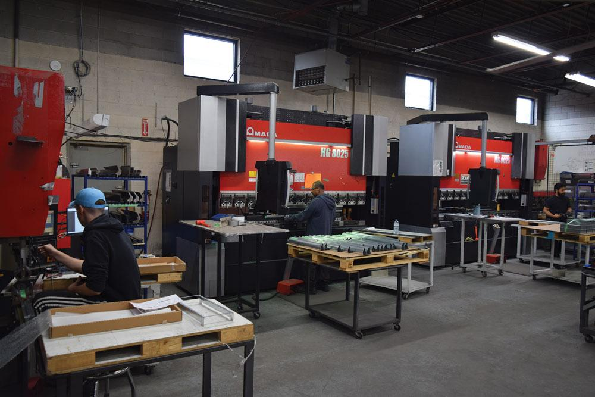

San Diego's CNC Turning & Lathe Specialists
Qualified Machine provides expert CNC turning services for businesses throughout San Diego County. Our advanced CNC lathes with live tooling capabilities enable us to produce highly complex cylindrical parts with exceptional precision and efficiency.
From custom shafts and fittings to complex rotational components, our skilled machinists deliver parts with superior surface finishes and tight dimensional accuracy. We work with a wide range of metals and plastics to meet the needs of diverse applications, including aerospace, medical, and automotive.
Get a Turning Quote

Turning Capabilities
- Machine Type: CNC Lathes with Live Tooling
- Max Diameter: Up to 14"
- Max Length: Up to 30"
- Tolerances: Down to ±0.0002"
- Features: Axial/Radial Drilling, Tapping, Grooving
- Materials: Steel, Stainless, Aluminum, Titanium, Brass, Plastics
Why Choose Us for CNC Turning in San Diego?
- ✓ Local Service: Conveniently located in Sorrento Valley.
- ✓ Live Tooling: Combining turning and milling in one setup for efficiency.
- ✓ Superior Finishes: Achieving excellent surface finishes (Ra).
- ✓ All Quantities: From one-off prototypes to large production runs.
- ✓ Quality Focused: Rigorous inspection ensures reliable results.
- ✓ Expert Team: Decades of combined CNC turning experience.